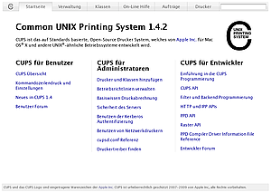

CUPS
Dieser Artikel wurde für die folgenden Ubuntu-Versionen getestet:
Ubuntu 16.04 Xenial Xerus
Ubuntu 14.04 Trusty Tahr
Zum Verständnis dieses Artikels sind folgende Seiten hilfreich:
CUPS  , das Common Unix Printing System, ist das am weitesten verbreitete Drucksystem auf Linux-Systemen. Über CUPS lassen sich zahlreiche Drucker nutzen, verwalten und im Netzwerk freigeben, da es als Client/Server-System aufgebaut ist. Ältere Systeme wie LPD (BSD-System) oder lprng wurden weitgehend verdrängt, vereinzelt kommen sie auf Routern mit Netzwerkdruckerfunktion vor.
, das Common Unix Printing System, ist das am weitesten verbreitete Drucksystem auf Linux-Systemen. Über CUPS lassen sich zahlreiche Drucker nutzen, verwalten und im Netzwerk freigeben, da es als Client/Server-System aufgebaut ist. Ältere Systeme wie LPD (BSD-System) oder lprng wurden weitgehend verdrängt, vereinzelt kommen sie auf Routern mit Netzwerkdruckerfunktion vor.
Ein Rechner mit CUPS kann im Netzwerk als Drucker-Server für Windows-Maschinen dienen. Diese Anbindung wird in Windows Netzwerkdrucker erklärt.
Installation¶
CUPS wird – als wichtiger Bestandteil des Betriebssystems – bei der Installation aller Ubuntu-Derivate mitinstalliert. Einzige Ausnahme ist die Ubuntu-Server-Edition; bei dieser kann man aber die Pakete über die Paketverwaltung nachinstallieren. Folgende Pakete enthalten die elementaren Teile von CUPS:
cups (die Server-Komponente)
cups-client (die Client-Komponente, kann auf reinen Clients auch einzeln installiert werden)
cups-bsd (Kompatibilitätslayer für das alte BSD-Drucksystem)
 mit apturl
mit apturl
Paketliste zum Kopieren:
sudo apt-get install cups cups-client cups-bsd
sudo aptitude install cups cups-client cups-bsd
Ggf. benötigt man noch spezielle Pakete, in denen spezialisierte Treiber enthalten sind. Wer nicht weiß, welche für ihn nützlich sind, installiert sie einfach alle.
hplip (für HP-Drucker, egal ob Laser- oder Tintenstrahldrucker; siehe HPLIP)
hpijs (wird für hplib benötigt)
printer-driver-gutenprint (enthält viele Treiber für sonstige Farb-Tintendrucker)
mit apturl
Paketliste zum Kopieren:
sudo apt-get install hplip hpijs printer-driver-gutenprint
sudo aptitude install hplip hpijs printer-driver-gutenprint
Dienst steuern¶
(Cups manuell starten/stoppen.) Cups wird normalerweise automatisch gestartet. Wie alle anderen Dienste liefert CUPS Start-/Stop-Skripte zum Kontrollieren des Serverprozesses mit.
# Allgemein
sudo /etc/init.d/cups {start|stop|restart|reload|status}
# Beispiel
sudo /etc/init.d/cups restart Funktionsweise von CUPS¶
CUPS wandelt die zu druckenden Daten durch sogenannte Filter immer in PostScript-Druckdaten. Diese können dann an Geräte der lokalen CUPS-Instanz sowie an andere CUPS-Instanzen geschickt werden.
Die Instanz, welche am Ende den Drucker steuert, muss die PostScript-Druckdaten entweder durch Treiber in gerätespezifische Druckdaten umwandeln oder, wenn das Gerät selbst PostScript unterstützt, die Daten direkt an dieses senden. Bei Geräten mit PostScript-Unterstützung stellt sich die Frage nach proprietären Treibern und ihrer Verfügbarkeit für Linux somit erst gar nicht.
In beiden Fällen benötigt CUPS noch eine sogenannte .ppd-Datei. Diese ist eine Beschreibung der Features des Druckers. CUPS bringt auch eine generische (allgemein gehaltene) .ppd mit, die man versuchen kann, falls der Hersteller oder die Open-Source Projekte noch keine gerätespezifische .ppd für genau das gewünschte Modell erstellt haben.
Einrichten¶
Hier wird die CUPS-Netzwerkkonfiguration und Einrichtung von Druckern über die CUPS-eigene Weboberfläche bzw. die Konsole beschrieben, dies ist vor allem für Serversysteme ohne grafische Benutzeroberfläche interessant. Grafische Desktop-Umgebungen haben Konfigurationswerkzeuge zum Einrichten von Druckern, siehe die Artikel GNOME Druckerkonfiguration und KDE Druckerkonfiguration. Trotzdem bietet sich auch von den verschiedenen grafischen Oberflächen ein Zugriff über die einheitliche CUPS-Weboberfläche an.
Via Netzwerk/Konsole installieren¶
Nach der Installation nimmt CUPS nur Druckaufträge vom lokalen Rechner an. Auch die Administration kann nur lokal erfolgen. Folgend wird gezeigt, wie man ohne grafische Oberfläche (GUI) den Netzwerkdruck konfiguriert, z.B. bei einem Server. Hierzu kann das Programm cupsctl verwendet werden:
# Ein cupsctl ohne Parameter gibt die aktuellen Einstellungen aus: cupsctl # Gibt die lokalen Drucker im Netzwerk frei: sudo cupsctl --share-printers # Aktiviert die Möglichkeit, CUPS über das Netzwerk zu administrieren: sudo cupsctl --remote-admin # Beides auf einmal sudo cupsctl --share-printers --remote-admin
Wie bei einem lokalen CUPS-Server kann die weitere Einrichtung jetzt über die Weboberfläche des CUPS-Servers auf dem entfernten Rechner erfolgen. Steht auf auf dem lokalen Rechner keine grafische Oberfläche zur Verfügung, kann man den CUPS-Server auch mit einem Text-Browser einrichten. Ganz einfach geht es z.B. mit lynx
lynx http://localhost:631
Weitere mögliche Shell-Browser: Shell/Anwendungen
Weboberfläche¶

CUPS besitzt einen integrierten Webserver, der über den Port 631 zu erreichen ist. Diesen kann man für das Einrichten und Verwalten der Drucker nutzen. Vom selben Rechner aus kann man also sehr einfach mit einem Browser durch Eingabe der Adresse (URL):
http://localhost:631
oder
http://127.0.0.1:631
auf die Konfigurationsseite zugreifen. Nicht jeder Benutzer darf hier alle Aktionen durchführen. Möchte man z.B. einen Drucker hinzufügen, so erscheint eine Passwortabfrage. Hier muss man sich mit seinen Benutzernamen und Passwort anmelden, allerdings werden nur Mitglieder der Gruppe lpadmin akzeptiert. Dies ist normalerweise der erste bei der Installation automatisch angelegte Benutzer. Weiteren Benutzern muss dieses Recht erst gegeben werden [4].
Beim Zugriff über das Netzwerk ist der Hostname oder die IP des entfernten Rechners anzugeben. Der Benutzername und das Passwort müssen auf dem entfernten Rechner gelten.
Drucker hinzufügen¶
Unter "Verwaltung" kann man Drucker zu CUPS hinzufügen. Lokale, direkt angeschlossene Drucker und nur über das Netzwerk erreichbare Drucker sowie Drucker an entfernten Druckservern werden mit den gleichen Schritten eingerichtet. Beide Druckertypen sollten zunächst direkt oder über das Netzwerk verbunden und angeschaltet werden. Nach Klicken auf "Verfügbare Drucker auflisten" werden viele Geräte bereits automatisch gefunden.
Die Erreichbarkeit von Netzwerkdruckern kann mittels ping in der Konsole geprüft werden. Auch bieten viele Netzwerkdrucker eigene Weboberflächen an.
Ist der lokale CUPS-Server so konfiguriert, dass er freigegebene Drucker im Netzwerk automatisch erkennt, so muss man Netzwerkdrucker üblicherweise nicht von Hand hinzufügen. Das manuelle Hinzufügen eines Netzwerkdruckers ist also nur nötig, wenn der Druckserver seine Drucker nicht automatisch verbreitet.
Das Einrichten eines Druckers erfolgt in fünf Schritten:
"Gerät/Anschluss" - Grundlegende Auswahl des einzurichtenden lokalen Druckers bzw. der Netzwerkverbindung
"Verbindung" - Für ältere lokalen Drucker mit Parallel-Schnittstelle gilt meistens "LPT #1", USB-Drucker werden automatisch erkannt. Die [Netzwerkprotokolle Netzwerk-URLs] sind unten beschrieben.
"Name/Beschreibung/Ort" - Der Name sollte keine Leer- oder Sonderzeichen beinhalten.
"Marke" - Diese Auswahl beeinflusst die angezeigten Druckertreiber im nächsten Schritt . Für Postscript-fähige Drucker ist eventuell eine PPD-Datei verfügbar, die man alternativ hier angeben kann. Dies reicht als Treiber-Einrichtung.
"Modell" - Oftmals sind für ein Modell mehrere Treiber verfügbar. Welcher Treiber die beste Druckqualität bzw. Leistung bringt, muss man evtl. durch ein paar Testausdrucke selber bestimmen.
"Standardeinstellungen" - Abschließend werden grundsätzliche Konfigurationen zum Drucker wie z.B. das zu nutzende Papierformat abgefragt. Danach steht der Drucker zur Verfügung.
Einen Testdruck kann man auf der Seite "Drucker" beim jeweiligen Drucker über das Ausklappfeld "Wartung" mit der Option "Testseite drucken" auslösen.
Anzumerken ist, dass die erste (meist einzige) parallele Schnittstelle unter Linux als "LPT #1" bezeichnet wird (/dev/lpX; die Nummerierung beginnt bei 0).
Netzwerkprotokolle¶
Es stehen die folgenden Verbindungen zur Auswahl:
"AppSocket/HP JetDirect (socket)" - Empfehlenswert für den Zugriff im lokalen Netzwerk. Angegeben werden muss eine URL im Format
socket://<druckerhostname.oder.ip>:<port>. Als Wert für den Port ist 9100 sehr verbreitet, dies hängt aber vom Drucker ab."Internet Printing Protocol (ipp)" - Andere CUPS-Server und modernere Netzwerkdrucker bieten dieses Protokoll an. Angegeben werden muss eine URL im Format
ipp://<hostname.oder.ip>/printers/<druckername>. Diese Protokoll erlaubt das Druckern übers Internet."LPD/LPR Host or Printer" - Manche Netzwerkdrucker oder Router mit Druckerport verwenden noch dieses alte Unix-Druckprotokoll. Die URL lautet hier
lpd://<servername>/<warteschlange>."Backend Error Handler" - Spezialfall zur Fehlerrückmeldung, hier nicht weiter betrachtet
"Windows Printer via SAMBA" - Drucker-Freigaben von Windows-Druckservern. Auch hier muss wieder nur eine URL im Format
smb://<arbeitsgruppe bzw. domäne>/<servername>/<druckername>angegeben werden. (Voraussetzung ist, dass das Paket smbclient installiert ist.)
Netzwerkdrucker bieten meist mehrere Zugangsprotokolle an. Unter CUPS wird zunächst das Socket-Protokoll empfohlen. Das IPP-Protokoll ist geringfügig langsamer aber universeller. LPD sollte nur verwendet werden, wenn die anderen Wege fehlschlagen. Weitere Fragen zur Verwendung der Netzwerkprotokolle beantwortet der Artikel Printserver.
Raw-Drucker¶
Ein Raw-Drucker im Sinne von CUPS ist ein Drucker, dessen Daten von CUPS nicht bearbeitet werden. Das heißt, die Daten vom Client werden 1:1 an den Drucker weitergeleitet. Einsetzen kann man einen Raw-Drucker z.B., wenn man die Treiber auf einem Windows-Client benutzen möchte/muss. Es bedeutet aber auch, dass der Treiber auf jedem Client installiert sein muss.
Voraussetzung für die Einrichtung eines Raw-Druckers ist, dass in den beiden Dateien:
/etc/cups/mime.types (ab Ubuntu 9.10 "Karmic": /etc/cups/raw.types )
/etc/cups/mime.convs (ab Ubuntu 9.10 "Karmic": /etc/cups/raw.convs )
die Zeilen am Ende der Dateien mit octet-stream nicht auskommentiert sind[2].
# /etc/cups/mime.types application/octet-stream
und
# /etc/cups/mime.convs application/octet-stream application/vnd.cups-raw 0 -
Das Einrichten geschieht wie oben beschrieben. Bei
"Marke" - ist "Raw" und bei
"Modell" - ist "Raw Queue (en)"
auszuwählen. Damit ist die Installation abgeschlossen.
Unter Windows erfolgt die Installation des Druckers so, als ob es ein lokaler Drucker wäre (einschließlich der Treiberinstallation). Danach muss unter "Eigenschaften -> Anschlüsse" des Druckers ein "Local Port" hinzugefügt werden. Wird Samba eingesetzt, ist beim Anschlussnamen \\<servername oder IP>\<Name des Druckers> anzugeben. Mit Übernehmen wird dem Drucker der neue Anschluss zugewiesen.
Warteschlange bearbeiten¶
Unter "Aufträge" kann man den Status der Druckaufträge des CUPS-Servers einsehen: Aufträge verwalten, neu starten, löschen, usw.
Status überwachen/verändern¶
Auf der Seite "Drucker" findet man eine Übersicht aller im System installierten Drucker. Hier kann man sehen, was die Drucker gerade machen, ob sie Aufträge abarbeiten oder ob Fehler vorliegen. Des Weiteren kann man alle wichtigen Aktionen bezüglich eines Druckers von hier aus starten: Testseiten ausdrucken, Drucker temporär deaktivieren, etc.
Druckerserver im Netzwerk¶
CUPS ist, wie in der Einleitung schon geschildert, als Client-/Server-System aufgebaut. Dadurch können Drucker im Netzwerk freigegeben werden und andere Rechner können diese Drucker nutzen.
In der Weboberfläche von CUPS findet sich auf der Seite "Verwaltung" unter "Server" Optionen, um diese Funktionen zu aktivieren:
"Zeige freigegebene Drucker von anderen Systemen" - Bindet andere Netzwerkdrucker automatisch lokal ein, so dass diese Drucker am Rechner genutzt werden können, ohne dass man sie manuell hinzufügen muss.
"Freigeben von Druckern welche mit diesem System verbunden sind" - Gibt lokale Drucker im Netzwerk frei. Notwendig, wenn andere CUPS-Server im Netz die angeschlossenen Drucker automatisch erkennen sollen.
"Erlaube entfernte Verwaltung" - Hierdurch erlaubt man die Administration des CUPS-Servers über die Weboberfläche von anderen Rechnern als "localhost".
Zugangskontrolle über ACLs¶
CUPS besitzt ein ausgeklügeltes System, mit dem man unter Einsatz von Access Control Lists (ACLs) festlegen kann, wer welche Rechte auf dem Server besitzt. Theoretisch kann man jedem einzelnen virtuellen Verzeichnis des CUPS-Servers unterschiedliche Rechte zuweisen, wobei der Zugriff für das eigentliche Drucken durch das Verzeichnis /printers/ repräsentiert wird. Existiert für ein Verzeichnis keine ACL, erbt es die ACL des übergeordneten Verzeichnisses.
In der Standardkonfiguration unter Ubuntu sind unterschiedliche Zugangsbeschränkungen für /admin/ (die Verwaltungsseiten), /admin/conf/ (der Speicherort der eigentlichen Konfigurationsdaten) und den ganzen Rest (/) vorgegeben. Im Allgemeinen kann man sich an diese sinnvolle Aufteilung halten.
Die ACLs werden in der ebenfalls in der Konfigurationsdatei des CUPS-Dienstes /etc/cups/cupsd.conf gesetzt und sehen auf einer frischen CUPS-Installation so aus:
# Restrict access to the server... <Location /> Order allow,deny Allow localhost Allow @LOCAL </Location> # Restrict access to the admin pages... <Location /admin> Order allow,deny Allow localhost </Location> # Restrict access to configuration files... <Location /admin/conf> AuthType Basic Require user @SYSTEM Order allow,deny Allow localhost </Location>
Wie man sieht, steht jeder ACL-Satz in einem speziellen <Location ''dirname''> ... </Location>-Block. Ohne weitere Veränderungen bedeutet das, dass man aus dem gesamten lokalen Netz drucken, die Warteschlangen bearbeiten oder andere Dinge erledigen kann, die mit der bloßen Benutzung der Drucker zu tun haben. Der Zugriff auf die Verwaltungsseiten ist dagegen nur vom lokalen Rechner aus möglich, und um an der Konfiguration des Servers etwas zu verändern, muss man sich sogar authentifizieren und Mitglied der SystemGroup (lpadmin) sein, die durch @SYSTEM repräsentiert wird.
Möchte man nun den Zugriff auf das System auch vom Netzwerk aus freigeben, so kann man dies beispielsweise durch hinzufügen der ACL Allow @LOCAL erreichen. Dadurch können alle Rechner im lokalen Netzwerk auf den entsprechenden CUPS-Dienst zugreifen. @LOCAL ist dabei eine bequeme Abkürzung für den IP-Adressbereich, in dem der CUPS-Server steht. Bei Bedarf kann man stattdessen auch reale IP-Bereiche nennen.
Für jedes Verzeichnis können bei Bedarf unterschiedliche ACLs definiert werden. Um z.B. die Verwaltungsseiten von CUPS auch von anderen Rechnern des eigenen Netzwerks oder aus dem entfernten Netz 192.168.10.0/24 aus zu erreichen, fügt man im passenden Abschnitt folgende ACLs ein. Auf dieselbe Art kann man auch im <Location />-Bereich zusätzliche Netze eintragen, die den (oder die) Drucker benutzen dürfen.
# Restrict access to the admin pages... <Location /admin> Order allow,deny Allow localhost Allow @LOCAL Allow 192.168.10.0/24 </Location>
Wer die Admin-Seiten des Servers nur bestimmten Benutzern zugänglich machen will, kann einfach die AuthType- und Require-Direktiven aus der /admin/conf-Location in den /admin-Bereich kopieren. Zu beachten ist allerdings, dass alle Bestandteile der ACLs zur Anwendung kommen. Die Einschränkungen durch Allow-Direktiven auf bestimmte Netzwerke kann man also auch durch Authentifizierung nicht umgehen. Es ist also nicht möglich, bspw. die Administration vom lokalen Host ohne und aus dem Netzwerk nur mit Authentifizierung zu erlauben.
Weitere Informationen zu den CUPS-ACLs findet man in der sehr ausführlichen Online-Hilfe  der CUPS-Weboberfläche und in der Manpage
der CUPS-Weboberfläche und in der Manpage man cupsd.conf.
Wenn man lediglich möchte, dass eine Administration über das Netzwerk möglich ist, kann man dies einfacher über cupsctl erreichen. Der Aufruf von
sudo cupsctl --remote-admin
reicht dazu aus.
SSL-Verschlüsselung¶
Da teilweise sensible Daten übertragen werden, z.B. Adminpasswörter, unterstützt der CUPS-Server Datenverschlüsselung nach dem SSL-Standard. Diese lässt sich in den einzelnen Location-Sektionen über die Encryption-Direktive steuern:
<Location /path> ... Encryption Never Encryption IfRequested Encryption Required </Location>
Man hat die Wahl zwischen
niemals verschlüsseln
nur verschlüsseln, wenn der Client möchte und
immer verschlüsseln.
Bei einer Übertragung von Passwörtern wird aber standardmäßig immer auf Verschlüsselung umgeschaltet. Das ist zwar sinnvoll, kann aber zu Überraschungen führen, wenn man das erste Mal auf so eine Seite zugreift. Das SSL-Zertifikat wird nämlich erst dann erstellt, wenn es das erste Mal gebraucht wird, was zumindest auf älterer Hardware einige Zeit in Anspruch nehmen kann (in der es scheint, als hätte der Server sich aufgehängt).
Besonderheiten¶
Reine Clientinstallation¶
Voraussetzung ist ein Rechner, der netzwerkweit einen Drucker und Warteschlangen (Spool) zur Verfügung stellt. Dann reicht es, dass die Clienten direkt auf den vom Server bereitgestellten Drucker zugreifen können. Dazu sind auf den Clients nur diese Pakete nötig:
Ab Ubuntu 8.10:
cups-client (die Client-Komponente, kann auf reinen Clients auch einzeln installiert werden)
cups-bsd (Kompatibilitätslayer für das alte BSD-Drucksystem)
mit apturl
Paketliste zum Kopieren:
sudo apt-get install cups-client cups-bsd
sudo aptitude install cups-client cups-bsd
Im Homeverzeichnis legt man dazu die Datei ~/.cups/client.conf an. Wenn der Ordner ~/.cups/ nicht existiert, muss er von Hand erstellt werden. In der Datei ist der Hostname oder die IP-Adresse des Druckerservers einzutragen. Alle freigegebenen Drucker stehen dann auf dem Client zur Verfügung. Beispiel:
ServerName Drucker-Server ServerName 192.168.1.1
Polling¶
Beim sogenannten Polling holt der CUPS-Server auf dem Client die Konfigurationen der Drucker vom CUPS-Server des Drucker-Servers. Dazu ist beim Client in der Datei /etc/cups/cupsd.conf das Polling zu aktivieren, indem man entweder die IP-Adresse oder den Hostnamen des Drucker-Servers angibt:
BrowsePoll epia.ruby-team.home
Accounting¶
CUPS kann unter gewissen Voraussetzungen protokollieren, welcher Benutzer wie viele Seiten gedruckt hat. Wichtig dafür ist, dass als Druckertreiber der "Generic postscript color printer" genutzt wird. Nur so kann CUPS in Druckaufträgen die Anzahl von Seiten analysieren.
Ein Accounting ist daher nur möglich, wenn der genutzter Drucker in der Lage ist, mit PostScript-Daten umzugehen. Das Log wird in der Datei /var/log/cups/page_log im Stil von
HP4P otto 457 [26/Oct/2007:15:42:10 +0200] 1 1 - 192.168.0.70 HP4P otto 457 [26/Oct/2007:15:42:10 +0200] 2 1 - 192.168.0.70 HP4P anna 462 [26/Oct/2007:16:05:27 +0200] 1 1 - 192.168.0.70 HP4P anna 463 [26/Oct/2007:16:06:10 +0200] 1 1 - 192.168.0.70
geführt. Die Auswertung kann beispielsweise mit PrintAnalyze oder phpPrintAnalyzer geschehen. Dabei sollte man beachten, dass Logdateien üblicherweise rotiert, also automatisch aufgeräumt werden. Daher sollte man vermeiden, dass die page_log von logrotate rotiert wird.
Problembehebung¶
Kompatibilität verschiedener CUPS-Versionen¶
Obwohl das eigentlich keine Rolle spielen sollte, häufen sich Berichte über Probleme zwischen CUPS-Servern mit der Version 1.5.x (Ubuntu 12.04) und Clients mit einer neueren Version von CUPS (1.6.x oder neuer). Abhilfe schafft eine Änderung in der Datei /etc/cups/cups-browsed.conf auf dem Client(!), wobei /version=1.1 entfernt werden muss:
# Use BrowsePoll to poll a particular CUPS server # BrowsePoll cups.example.com # BrowsePoll cups.example.com:631 BrowsePoll SERVER-NAME_ODER_IP-ADRESSE:631/version=1.1
Falls die Datei nicht existiert, ist das Paket cups-browsed nicht installiert und man muss die Ursache an anderer Stelle suchen.
Parallelport aktivieren¶
Falls dieser nicht automatisch geladen bzw. aktiviert wird, erledigt man das von Hand:
sudo modprobe -v parport_pc
Um den Vorgang nicht nach jedem Neustart wiederholen zu müssen, fügt man der Datei /etc/modules mit Root-Rechten die Zeile
parport_pc
hinzu.
Drucken mit HP-Laserdruckern sehr langsam¶
Falls der Ausdruck bei Einsatz eines Laserdruckers von HP an der parallelen Schnittstelle "LPT #1" (dev/lp0) sehr lange dauert, kann es sinnvoll sein, eine Änderung an /etc/cups/printers.conf vorzunehmen [2], um hplip zu umgehen. Dazu ist die Zeile
DeviceURI hp:/par/HP_Druckername?device=/dev/parport0
gegen
DeviceURI parallel:/dev/lp0
austauschen und Cups neu zu starten.
Startreihenfolge Samba/Cups¶
Nach dem Neustart des Servers sind unter Windows zwar die Netzlaufwerke verfügbar, jedoch ist kein einziger Drucker sichtbar. Ursache: Samba startet vor Cups. Schnelle Abhilfe: Neustart des SMBD Dienstes mit sudo restart smbd.
Damit Samba nach Cups startet, ist folgende Änderung der Datei /etc/init/smbd.conf notwendig:
start on local-filesystems
ändern zu:
start on (local-filesystems and stopped rc)
Danach muss der Rechner neu gestartet werden.
Große Dateien werden nicht gedruckt¶
Wenn sporadisch bestimmte, vor allem große Dateien nicht gedruckt werden können, kann es helfen im Druckmenü in den Eigenschaften des Druckers unter dem Reiter "Gerät" die Druckersprache auf 'Postscript (Level des Treibers)' zu ändern.
Druckerstatus „Filter failed“¶
Falls der Drucker als Fehlermeldung „Filter failed“ ausgibt, kann ein Löschen und neu Hinzufügen des Druckers mit anderem Namen helfen. Genaue Beschreibung und weitere Problemlösungen unter http://thenumberzero.blogspot.de/2014/02/how-to-fix-hp-printer-filter-failed.html.
Drucker pausiert willkürlich¶
Sollte ein USB-Drucker willkürlich beim Drucken pausieren, kann es an tlp liegen. Um den Drucker wieder normal benutzen zu können, muss die Drucker ID in die Blacklist von tlp eingetragen werden oder USB-Autosuspend deaktiviert werden. Hier geht es zur FAQ von TLP: http://linrunner.de/en/tlp/docs/tlp-configuration.html#usb
Drucker ID zur Blacklist hinzufügen:
Drucker mit Computer verbinden
ein Terminal öffnen
Drucker-ID mit 'lsusb' herausfinden (sollte ca. so aussehen: Bus 003 Gerät 052: ID 04e8:3292 Samsung Electronics Co., Ltd Laserdrucker der Serie ML-1640)
Konfigurationsdatei mit einem Texteditor öffnen (pluma, gedit, nano etc.) 'sudo pluma /etc/default/tlp'
zu Zeile 178 gehen oder nach '#USB_BLACKLIST=' suchen
entferne das # und die Zahlen zwischen den " und füge die Drucker-ID dort ein (sollte ca. so aussehen: USB_BLACKLIST="04e8:3292")
die Datei speichern und neu starten

- Erstellt mit Inyoka
-
 2004 – 2017 ubuntuusers.de • Einige Rechte vorbehalten
2004 – 2017 ubuntuusers.de • Einige Rechte vorbehalten
Lizenz • Kontakt • Datenschutz • Impressum • Serverstatus -
Serverhousing gespendet von